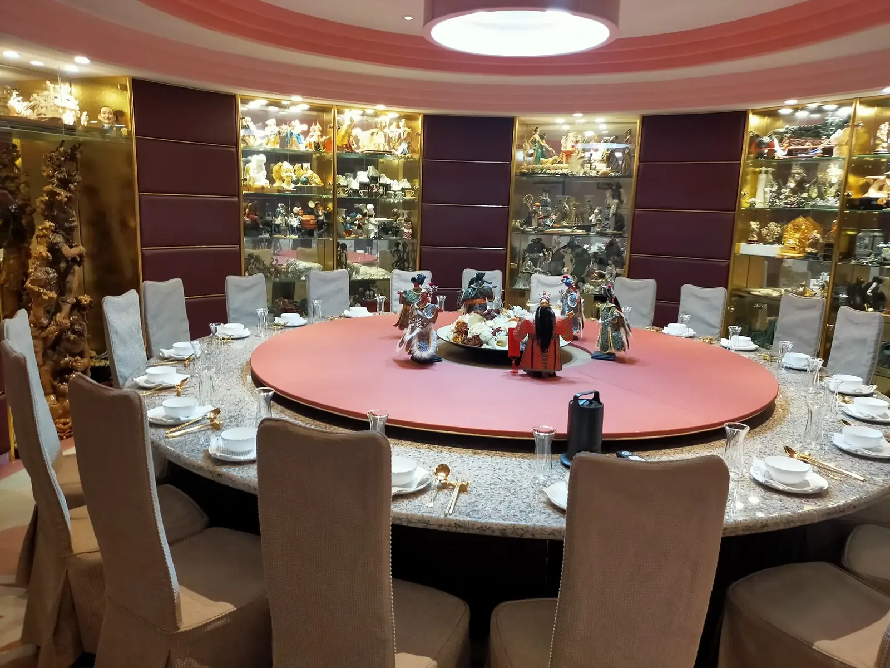

同樣是牛肉，價格可以差上十倍。了解食材價格背後的原因，能幫助你在預算內做出更聰明的選擇。
最後更新：2026 年 10 月 11 日
松露難以人工大量栽培，魚子醬需要長時間養殖與取卵，產量有限，價格自然高。產量越少、取得越困難，價格通常越高。
和牛的價格取決於血統、飼養方式與肉質等級，油花分布越細緻、等級越高，價格越貴。肉品等級是用來描述品質的系統，不代表每個人都會覺得越高級越好吃，口味偏好也是選擇的因素。
進口的生鮮海鮮與肉類需要冷鏈運送與嚴格保存，成本會反映在價格上。非產季的食材也可能因為保存或進口，價格比當季貴上不少。
高價食材不一定適合每個場合。長輩的家宴可能更適合軟嫩、清爽的菜色，商務宴請則可能偏重體面與呈現。選擇食材時，先考慮賓客與場合，再決定預算要放在哪裡。
建議把預算集中在一兩道最能代表場合的主菜，其餘用當季食材與主廚手法補足。舒苑的報價分為不同規模與等級，6–8 人小型家宴 NT$38,000 起，詳細說明請見到府私廚價格頁。
因為松露難以大量人工栽培，產量有限且需要特定環境與搜尋，所以價格偏高。
等級是描述油花與品質的系統，不代表每個人都偏好。長輩可能更適合清爽的肉質，選擇時仍以賓客口味為主。
把預算集中在最能代表場合的一兩道，其餘使用當季食材與主廚手法補足。
提供活動日期、人數與場地，我們將提供最適合的私廚方案與報價建議。